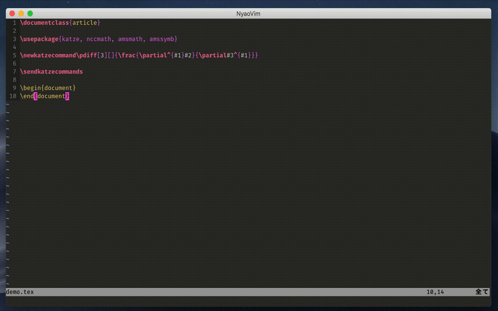

Demo
何はともあれ。コンパイルすると\pdiffがプレビュー上で使えるようになってるのがお分かりいただけると思います。 
何を作ったか
\LaTeX文書の数式をプレビューしながら書けるようにしました。 このとき定義したマクロが反映されるのが売り。 使ったものは
- NyaoVim : NeoVimのElectronフロントエンドで、UIプラグインを作って拡張できる
- \KaTeX : 主にWebページ上で数式をレンダリングするやつ。レンダリングが鬼のように速い
- Lua\LaTeX : Luaで書かれたLaTeX処理系。Luaで拡張できる
という感じです。 LuaとJSでソケット通信してマクロを同期し、バッファから数式を取ってきて\KaTeXでNyaoVimの画面上に描画してます。 つまり、単にKatzeと言ってますがNyaoVimプラグインと\LaTeXパッケージに分かれています。
動機
\LaTeX数式って書きにくくないですか? 単に名前が長いとか、\leftと\rightの対応をミスして怒られるとか。 もちろんマクロを定義することで解決できる部分も大きいですが、P^-1APとかってやって思ってたのと違う、とかalign環境で改行忘れたとか完成形が見えてないことに起因するミスが生じやすいように思います。
という訳で、マクロが使えるリアルタイムプレビューが欲しい、となります。 ずっとフロントエンド何も分からんと言いながら作っていたんですが、私自身が使いたかったのでそれなりにモチベが続いた面があります。
\TeX自体と通信する以外の方針も考えたんですが、オレオレ数式マクロパッケージみたいなのを作ってパッケージオプションで挙動を切り換えられるようにしたときにプレビューに反映できるのはこのくらいかなぁと思ったのでこんな感じになりました。
構造
NyaoVimはUIプラグインをWebComponentsとしてラップして使う方針を取っています。 メインはそのコンポーネント関連のJavaScriptです。
\TeXとのマクロの同期はソケット通信です。 サーバーはJSで立てれば良いんですが、\TeX自体にはソケット通信の機能がありません(それはそう)。 Lua\LaTeXのLua処理系texluaはなぜかソケット通信ライブラリをバンドルしていて、これを使っています。 これがLua\LaTeXしかサポートしてない主な理由です。 ソケット通信だけnetcatとかに投げてクロスエンジンにする手もあったはあったんですが単にガッツリ\TeXプログラミングする気になれなかったんですよね……
それと、一応LyXの存在は認識しています。 軽く触ってもみたんですが、オレオレマクロとの親和性が微妙なのかなぁと思っています。 ベクトルをいっぱい使う時にいちいち\mathbfって書きたくないので\generatevector{EBDH}と書くと\vE \to \mathbf{E}等が定義されるマクロなんかを良く使うんですが、そういうのもやれるんですかね……? まぁ使いこんだとかでは全くないので大嘘言ってるかもしれないですが……
懸念
NyaoVim自体が1年くらいコミットがないようです。 当初は「個人で開発されてるものだしまぁしょうがないよねー」くらいであんまり気にしてなかったんですが、Webの新陳代謝はすごいようで、基盤になっている技術があんまり推奨されなくなってたりします(HTML importsなど)。 OSSなんだから貢献しろよという話は大変ごもっともなんですが外部の人間がいきなりガッツリ破壊的変更含むPR出すとかってどうなんですかね……? このへんのお作法が良く分かっておらず……
NeoVimのElectronフロントエンドというと最近はOniなんかもあるんですが、どうも単なるフロントエンドというよりVimの上に乗ったモダンな別エディタを目指してるようで思想から違いそうです。 次のOni 2ではVim Scriptはサポートしないとまで言ってますし。
まぁ変な話プレビューさえ見られればそれがエディタとくっついてる必要は何もない訳で、どうしてもとなればKatze-Electronなりを別に作れば良くはあります。
これからの話
何らかの形で改良はこれからも加えていくと思います(主に私が使いたいので)。 というか現状色々と作りが雑な所とか変なワークアラウンドとかもあるのでその辺も徐々にいじりたいですし、先程のこともあるのでNyaoVim本体への貢献含め検討したいところです。